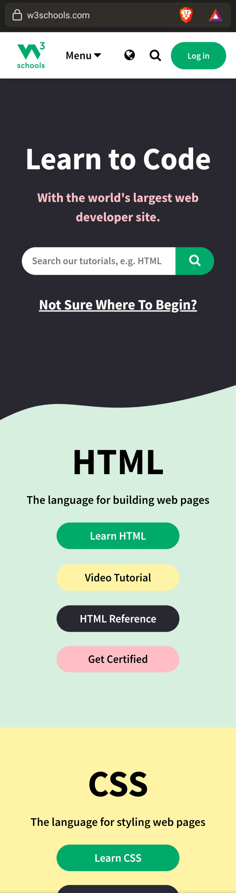

Rule of Thirds
This website clearly uses the Rule of Thirds. The background picture is split into nine pieces like the tic-tac-toe grid that is used to place items according to the design rule. The main elements on the screen are the title, which is centered in the middle box, and the three "continue" buttons, which are top-aligned within the bottom third. This is good design because it is easy for the viewer to see and understand.
Hick's Law
Disney+
This website exemplifies Hick's Law by showing the user two large buttons at first. They can choose either "get them both" or "get all three". This is smart because in reality, when the user chooses one of the options, they find there are many different subscription options. But at first, the choice is simple so that the user will make a quick decision and be invested in making a purchase.
PARC: Repetition
W3Schools
This website uses the principle of repetition. As the user scrolls down the entire webpage, they find sections on "HTML", "CSS", "JavaScript", "Python", "SQL", and so on displaying many programming languages. In each section there are buttons which repeat labels and colors. This makes it easy for the user to find what they need because they know what to expect as they move through the website.